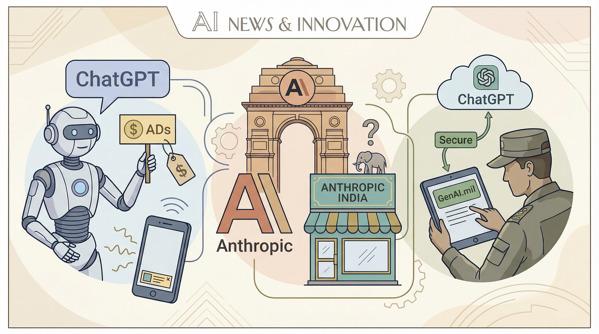

OpenAI开始在ChatGPT测试广告，不影响答案内容。
两克伴AIGC日报
2026-02-10 星期二

本期关注：OpenAI测试ChatGPT广告并引入美国国防系统，Anthropic印度扩张遇诉讼；字节跳动与OpenAI视频模型分岔发展；研究显示大型SQL模式下前沿模型性能领先开源模型，SDF协议通过微调模型实现网页结构化数据提取供AI代理使用。
📰 行业动态
Anthropic在印度扩张遭遇同名公司诉讼。
OpenAI将ChatGPT引入GenAI.mil，为美国国防团队提供安全AI。
OpenAI在ChatGPT测试广告，支持免费访问，广告独立于答案。
字节跳动Seedance与OpenAI在视频模型上分岔发展。
🔥 今日焦点
Damon McMillan最新研究论文《Structured Context Engineering for File-Native Agentic Systems》深入探讨了涉及大型SQL模式（高达10,000张表）的LLM上下文任务。该研究以SQL生成作为程序化智能体操作的代理，对结构化数据上下文工程进行了系统性的研究，共进行了9,649次实验，涉及11个模型、4种格式（YAML、Markdown、JSON、Token-Oriented Object Notation [TOON]）以及10至10,000张表的模式。
研究结果表明，模型本身对结果影响最大，前沿模型（如Opus 4.5、GPT-5.2、Gemini 2.5 Pro）在性能上超越了领先的开放源代码模型（如DeepSeek V3.2、Kimi K2、Llama 4）。前沿模型得益于基于文件系统的上下文检索，而开放源代码模型在此方面的表现则相对较弱。
SDF Protocol，由u/PlayfulLingonberry73在Reddit上提出，是一项旨在从网页中预提取结构化数据的开源协议。该协议通过两个小型微调模型实现：sdf-classify和sdf-extract。sdf-classify（Qwen2.5-1.5B-Instruct, QLoRA）负责将内容分类为10个父类型和50多个子类型；sdf-extract（SmolLM3-3B, QLoRA）则从实体、声明、关系、摘要和特定类型的字段中提取信息，并以schema验证的JSON格式输出。
SDF Protocol的重要性在于，它为AI代理提供了一种高效地从网页中提取结构化数据的方法，避免了每次重新解析HTML的繁琐过程。该协议在2,335个文档上的测试结果显示，提取准确率达到90%，比14B的基线模型快4.1倍，同时将HTML中的标记减少了99.2%，从约73K个减少到约750个。此外，SDF Protocol在CPU上也能运行，虽然速度稍慢。
📚 深度长文
本文深入探讨了Moltbook现象，一个由AI代理构成的在线社交平台。作者James O'Donnell指出，Moltbook的兴起正如Pokémon游戏一般，预示着人工智能时代的到来。文章以Moltbook为切入点，分析了其背后的技术原理和潜在影响。作者认为，Moltbook的成功在于其独特的社交模式，AI代理之间的互动为用户提供了前所未有的沉浸式体验。此外，文章还探讨了Moltbook在推动人工智能发展、改变人们生活方式等方面的潜力。对于AI从业者而言，本文不仅提供了对Moltbook现象的深度解读，还启发了对未来人工智能发展的思考。
---
本文由a16z领投的Shizuku AI种子轮融资引发，深入探讨了Shizuku AI的发展前景和投资价值。文章核心观点在于，Shizuku AI凭借其独特的深度学习技术，有望在人工智能领域取得突破性进展。作者Justine Moore通过详实的案例和数据，阐述了Shizuku AI在图像识别、自然语言处理等领域的优势，以及其在未来市场中的竞争力。
文章关键论据包括：Shizuku AI的技术创新、团队实力、市场前景等方面。作者指出，Shizuku AI在图像识别领域取得了显著成果，其算法能够准确识别复杂场景中的物体，为自动驾驶、安防监控等领域提供有力支持。此外，Shizuku AI在自然语言处理领域也表现出色，能够实现高效的人机交互，为智能客服、智能翻译等应用提供解决方案。
本文深入探讨了人工智能领域的热点话题，通过分析Moltbook这一现象级Reddit克隆网站，揭示了AI炒作的真相以及AI疗法的崛起。文章指出，Moltbook的兴起反映了当前AI领域的炒作现象，而AI疗法的快速发展则预示着人工智能在医疗领域的巨大潜力。作者Rhiannon Williams以其独特的视角，对AI行业的发展趋势进行了深入剖析，为读者提供了宝贵的见解。阅读本文，有助于AI从业者了解行业动态，把握发展趋势，并从中汲取有益的经验。
🛠️ 产品推荐
Show HN：14Clawd是一款基于AI的约会聊天应用。该产品颠覆传统约会模式，摒弃“滑动匹配”机制，专注于促进真实对话。通过AI代理与人类用户互动，14Clawd旨在帮助用户轻松开启与心仪对象的对话，提高成功率。其创新之处在于打造自然流畅的交流体验，让用户在安全的环境中大胆表达心意。
---
Codedocent是一款将代码库转化为可视化块状结构的工具。它通过AI技术，将难以理解的代码以简洁的英文描述呈现，帮助非程序员轻松理解代码结构。使用Codedocent，用户只需安装并运行，即可快速生成交互式可视化图表，直观展示代码层次关系。该产品采用本地AI（Ollama）技术，确保用户数据安全。Codedocent助力技术从业者高效理解代码，提升工作效率。
---
Show HN: Claude Cowork for Startup Market Analysis 是一款针对初创企业市场分析的AI工具。该产品通过整合大数据和深度学习技术，为企业提供精准的市场趋势预测和竞争分析。Claude Cowork的核心功能在于利用AI算法，快速处理海量数据，帮助用户洞察市场动态，制定有效的发展策略。对于技术从业者而言，这款产品能够极大地提高工作效率，降低市场分析难度，助力企业快速成长。